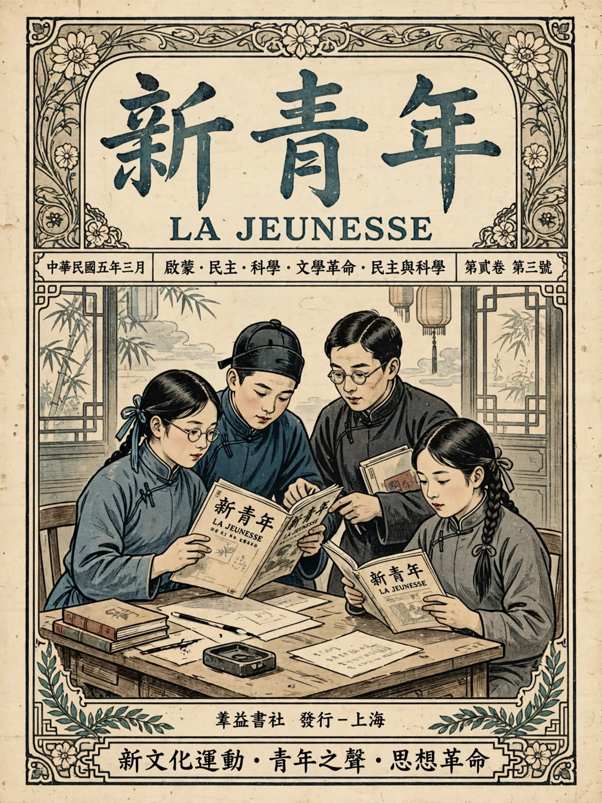

| New Culture Movement | |
|---|---|
 | |
| Chinese | 新文化運動 (Xīn Wénhuà Yùndòng) |
| Period | c. 1915 – early 1920s |
| Center | Peking University, Beijing |
| Key figures | Chen Duxiu, Hu Shi, Lu Xun, Li Dazhao, Cai Yuanpei |
| Key journal | New Youth (新青年, Xin Qingnian) |
The New Culture Movement (新文化運動) was an intellectual and cultural movement in China in the mid-1910s and 1920s that arose from disillusionment with traditional Chinese culture following the failure of the Republic of China to solve the country's problems. Its leaders advocateded a new Chinese culture based on global and Western standards — especially democracy and science ("Mr. Democracy" and "Mr. Science") — and attacked Confucian traditions, superstition, and the classical written language.
The movement grew around the journal New Youth, founded by Chen Duxiu in Shanghai in 1915. Chen, along with figures such as Hu Shi, Lu Xun, Qian Xuantong, and Liu Bannong, published fierce critiques of Confucianism, which they blamed for China's weakness. Peking University, under chancellor Cai Yuanpei, became its institutional home, hiring Chen as dean and Li Dazhao as librarian.
A central achievement was the promotion of written vernacular Chinese (baihua) over classical Chinese (wenyan). In 1917 Hu Shi published his modest proposals for literary reform, and Lu Xun's "Diary of a Madman" (1918) — the first major modern Chinese short story in the vernacular — used the new form to attack the "man-eating" old society. By 1920 the Ministry of Education required vernacular textbooks in primary schools.
The movement overlapped with and helped ignite the May Fourth Movement of 1919, when student protests erupted over the Treaty of Versailles' decision to transfer German concessions in Shandong to Japan. In the 1920s the movement split: liberals such as Hu Shi pursued gradual reform, while Li Dazhao and Chen Duxiu turned to Marxism and co-founded the Chinese Communist Party in 1921. The movement permanently reshaped Chinese literature, education, and political thought.
See also: May Fourth Movement · Lu Xun · Baihua